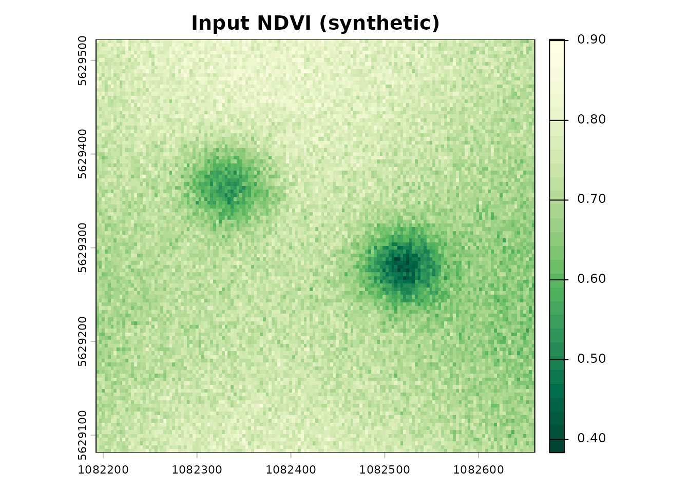
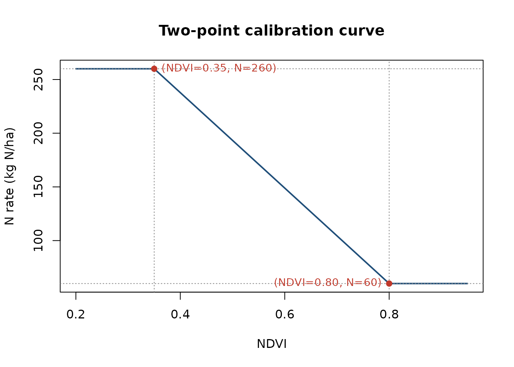
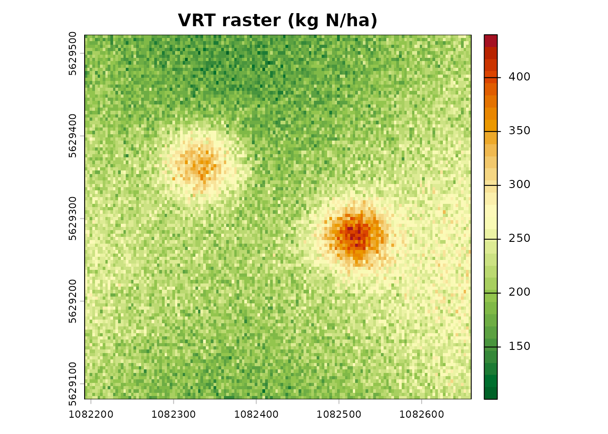
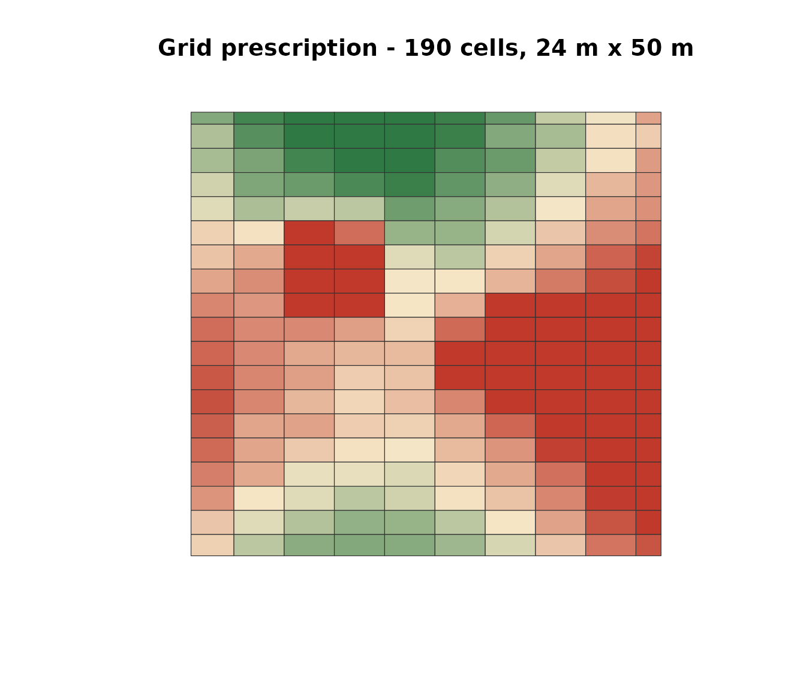
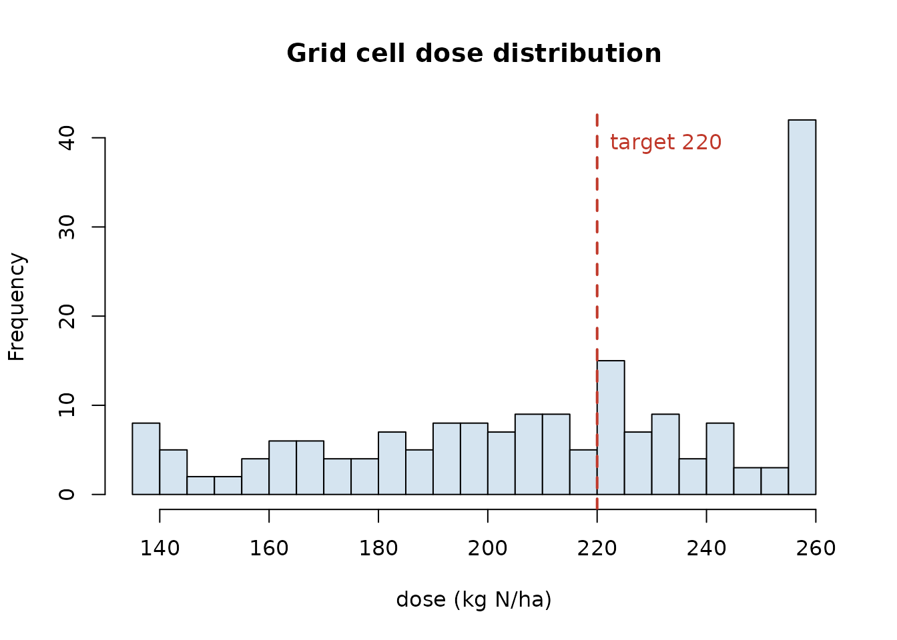

Prescription map worked example: NDVI, calibration curve, grid
Source:vignettes/prescription-map-example.Rmd
prescription-map-example.RmdThis vignette shows the full workflow from an NDVI raster to a machine-width grid prescription map, in six steps:
- Load the field polygon (bundled demo farm).
- Synthesise or load an NDVI raster on that field.
- Define the calibration curve (VI -> N rate) from two anchor points.
- Generate Option A - a pixel-by-pixel VRT raster
with
variable_rate_N(). - Generate Option B - a grid
prescription with
build_strip_prescription()(machine width x cell length, along an A-B line), colour-coded by the same calibration. - Export both as GeoTIFF / Shapefile / ISOXML.
All of this runs on the demo data that ships with NFert.
1. Load a field polygon
library(NFert)
library(sf)
ex <- system.file("extdata/example_farm.geojson", package = "NFert")
farm <- sf::st_read(ex, quiet = TRUE)
# Pick plot P03 - "Lower Ditch", 7.8 ha grain maize, loamy soil
field <- farm[3, ]
field[, c("plot_id", "plot_name", "crop", "area_ha")]
#> Simple feature collection with 1 feature and 4 fields
#> Geometry type: POLYGON
#> Dimension: XY
#> Bounding box: xmin: 9.7215 ymin: 45.048 xmax: 9.7257 ymax: 45.0508
#> Geodetic CRS: WGS 84
#> plot_id plot_name crop area_ha
#> 3 P03 Lower Ditch Grain maize 500-700 (grain) 7.8
#> geometry
#> 3 POLYGON ((9.7215 45.048, 9....
plot(sf::st_geometry(field), col = "#D5E4F0", border = "#1F4E79",
main = sprintf("Field: %s (%.1f ha)",
field$plot_name, field$area_ha))2. Synthesise (or load) an NDVI raster
In a real workflow you would read a GeoTIFF from UAV or Sentinel-2. Here we build a plausible NDVI in one line using the internal demo helper (same synthesiser used by the Shiny “Load demo NDVI” button):
library(terra)
# Two-patch NDVI with smooth base + noise
set.seed(7)
fp <- sf::st_transform(field, 3857)
bb <- sf::st_bbox(fp)
nx <- 150
ny <- 110
r <- terra::rast(xmin = bb$xmin, xmax = bb$xmax,
ymin = bb$ymin, ymax = bb$ymax,
ncols = nx, nrows = ny, crs = "EPSG:3857")
x <- seq(0, 1, length.out = nx); y <- seq(0, 1, length.out = ny)
gx <- matrix(x, nrow = ny, ncol = nx, byrow = TRUE)
gy <- matrix(y, nrow = ny, ncol = nx)
base <- 0.72 + 0.05 * sin(4 * gx) + 0.04 * cos(5 * gy)
patch1 <- 0.22 * exp(-(((gx - 0.30)^2 + (gy - 0.35)^2) / 0.010))
patch2 <- 0.26 * exp(-(((gx - 0.70)^2 + (gy - 0.55)^2) / 0.008))
ndvi_vals <- base - patch1 - patch2 + 0.03 * rnorm(nx * ny)
ndvi_vals <- pmin(pmax(ndvi_vals, 0.30), 0.92)
terra::values(r) <- ndvi_vals
r <- terra::mask(r, terra::vect(fp))
names(r) <- "NDVI"
r
#> class : SpatRaster
#> size : 110, 150, 1 (nrow, ncol, nlyr)
#> resolution : 3.116946, 4.010757 (x, y)
#> extent : 1082192, 1082660, 5629081, 5629522 (xmin, xmax, ymin, ymax)
#> coord. ref. : WGS 84 / Pseudo-Mercator (EPSG:3857)
#> source(s) : memory
#> name : NDVI
#> min value : 0.383404
#> max value : 0.901509
terra::plot(r, main = "Input NDVI (synthetic)",
col = hcl.colors(30, "YlGn"))
3. Define the calibration curve
The two-point linear calibration maps an NDVI
reference (lowest vigour) to max_dose (to push canopy
development) and a high-vigour NDVI to min_dose (canopy
already lush, less N needed):
# Agronomic N target from the field-scale balance (example: 220 kg N/ha
# for an 11 t/ha grain maize in Pianura Padana)
N_target <- 220
min_dose <- 60
max_dose <- 260
vi_low <- 0.35 # anchor for max_dose
vi_high <- 0.80 # anchor for min_dose
# Plot the calibration
vi <- seq(0.20, 0.95, length.out = 200)
slope <- (min_dose - max_dose) / (vi_high - vi_low)
intercept <- max_dose - slope * vi_low
dose_curve <- pmin(pmax(slope * vi + intercept, min_dose), max_dose)
plot(vi, dose_curve, type = "l", lwd = 2, col = "#1F4E79",
xlab = "NDVI", ylab = "N rate (kg N/ha)",
main = "Two-point calibration curve")
abline(v = c(vi_low, vi_high), lty = 3, col = "#888")
abline(h = c(min_dose, max_dose), lty = 3, col = "#888")
points(c(vi_low, vi_high), c(max_dose, min_dose),
pch = 19, col = "#C0392B")
text(vi_low, max_dose, sprintf("(NDVI=%.2f, N=%d)", vi_low, max_dose),
pos = 4, cex = 0.9, col = "#C0392B")
text(vi_high, min_dose, sprintf("(NDVI=%.2f, N=%d)", vi_high, min_dose),
pos = 2, cex = 0.9, col = "#C0392B")
4. Option A - pixel-by-pixel VRT raster
variable_rate_N() applies the calibration to every pixel
and rescales the output so the area-weighted mean equals the balance
target (mass-balance constraint). With
method = "calibration" the two anchor points are taken
automatically from the empirical min /
max of the NDVI raster mapped to
(maxN, minN) — i.e. the lowest-vigour pixels
get the highest dose and vice-versa. If you need to fix the anchors
yourself (e.g. force them to vi_low = 0.35 and
vi_high = 0.80 from your local calibration), use Option B
with build_strip_prescription() below, which exposes them
as arguments.
vr <- variable_rate_N(
ndvi_raster = r,
n_dose = N_target,
method = "calibration", # or "holland" for Holland & Schepers
minN = min_dose,
maxN = max_dose
)
rx_raster <- vr$rate_raster %||% vr # robust to return shape
terra::plot(rx_raster,
main = "VRT raster (kg N/ha)",
col = rev(hcl.colors(30, "RdYlGn")))
cat("Mean applied N: ", round(terra::global(rx_raster, "mean", na.rm = TRUE)[1, 1], 1),
"kg N/ha\n")
#> Mean applied N: 220 kg N/ha
cat("Range: ", round(terra::global(rx_raster, "min", na.rm = TRUE)[1, 1], 1),
"-", round(terra::global(rx_raster, "max", na.rm = TRUE)[1, 1], 1), "kg N/ha\n")
#> Range: 101.5 - 439.8 kg N/ha%||% is just defensive code (some versions of
variable_rate_N() return a list, others a raster directly);
it is defined once at the top of the vignette in the hidden setup
chunk.
5. Option B - machine-width grid along an A-B line
The pixel-by-pixel raster in Option A is fine for a self-driving
tractor with a continuous-rate spreader, but many farm monitors prefer a
block prescription: rectangular cells of
machine_width x cell_length with a single dose per cell.
NFert’s build_strip_prescription() produces exactly that,
applying the same calibration internally:
rx_grid <- build_strip_prescription(
field = field,
machine_width = 24, # metres, working width of the spreader
cell_length = 50, # metres, along the A-B line (0 = continuous strips)
angle_deg = NULL, # NULL = auto-detect long side; set 30 / 90 / ... to force
variability = "calibration",
vi_raster = r,
n_target = N_target,
min_dose = min_dose,
max_dose = max_dose,
vi_low = vi_low,
vi_high = vi_high,
preserve_mean = TRUE)
# Plot with the dose-based palette used by the Shiny app
pal <- colorRampPalette(c("#2F7A44", "#F6E7C7", "#C0392B"))(100)
col_idx <- as.integer(round(
(rx_grid$dose - min(rx_grid$dose, na.rm = TRUE)) /
diff(range(rx_grid$dose, na.rm = TRUE)) * 99)) + 1
plot(sf::st_geometry(sf::st_transform(rx_grid, 3857)),
col = pal[col_idx], border = "#333", lwd = 0.6,
main = sprintf("Grid prescription - %d cells, 24 m x 50 m",
nrow(rx_grid)))
The A-B direction is inferred from the longest edge
of the field polygon. Pass angle_deg = 45 (or any number)
to force a specific driving direction, or
ab_line = <sf LINESTRING> to use an existing
tramline.
Distribution of doses per grid cell
hist(rx_grid$dose, breaks = 20, col = "#D5E4F0",
main = "Grid cell dose distribution",
xlab = "dose (kg N/ha)")
abline(v = N_target, col = "#C0392B", lwd = 2, lty = 2)
text(N_target, par("usr")[4]*0.9,
sprintf("target %d", N_target), pos = 4, col = "#C0392B")
6. Export to tractor-ready formats
# A) raster GeoTIFF (farm-management software, continuous)
terra::writeRaster(rx_raster, "rx_raster.tif", overwrite = TRUE)
# B) grid polygons - any format accepted by the on-board monitor
export_prescription(rx_grid, "rx_grid.shp", format = "shp")
export_prescription(rx_grid, "JD/rx_grid.shp", format = "johndeere")
export_prescription(rx_grid, "TRIMBLE/rx_grid.shp", format = "trimble")
export_prescription(rx_grid, "TASKDATA", format = "isoxml",
isoxml_opts = list(task_name = "N top-dress",
product = "Urea 46 pct",
unit = "kg/ha"))
# Or every format in one zip-ready folder:
export_prescription_all(rx_grid, "rx_bundle", "campo_grande",
formats = c("shp", "geojson", "gpkg", "isoxml",
"johndeere", "trimble"))7. Notes
-
Mass-balance constraint -
preserve_mean = TRUE(default) makes the area-weighted mean dose matchn_target. The balance provides the legally defensible field ceiling (MAS / ZVN 170 kg N/ha), and the VRT / grid layer redistributes it in space. -
Calibration sources - the default anchors
(
vi_low = 0.35,vi_high = 0.80) work for most mid-season Sentinel-2 NDVI in Northern Italy. Recalibrate locally against a set of plot-level yield / N-status samples for operational use. -
Cell granularity - finer
cell_lengthgives a denser grid but risks delivery oscillations on the spreader; 50-100 m along the A-B line is a reasonable default for a 24-36 m machine. -
Same pipeline for NNI - replace
variability = "calibration"withvariability = "nni"and pass an NNI raster (fromcompute_NNI_from_S2()ornni_from_vi_empirical()) instead of the VI to drive the strips by nitrogen status zones directly.